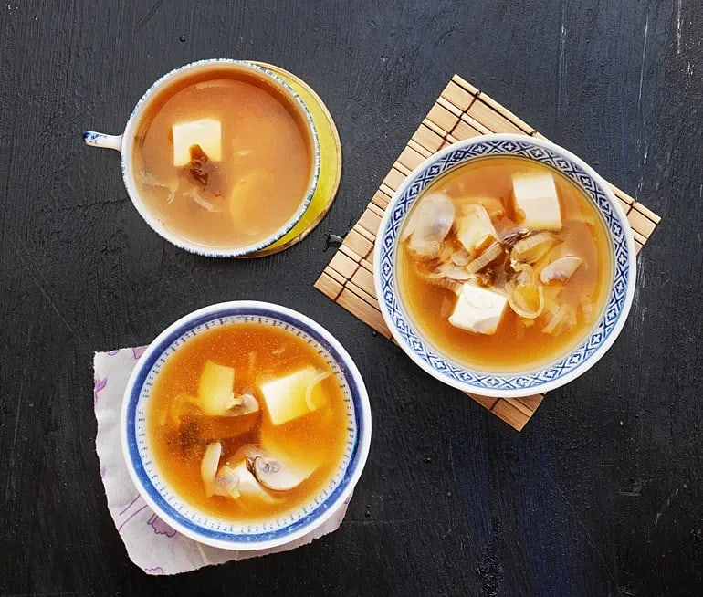

Miso soup

What you will need
- 1 L water
- 1 fish stock cube
- 4 tbsp miso paste
- 2 tbsp finely chopped leeks
- 5 thinly sliced large mushrooms
- 1/2 pack of tofu (each 200 g)
Instructions
- Boil the water. Add crumbled fish stock cube. Cook. Add the leek and the mushroom. Simmer for a couple of minutes.
- Stir in the miso paste. Taste. If the taste is weak, add more miso. Add diced tofu then serve
Go back to recipe site